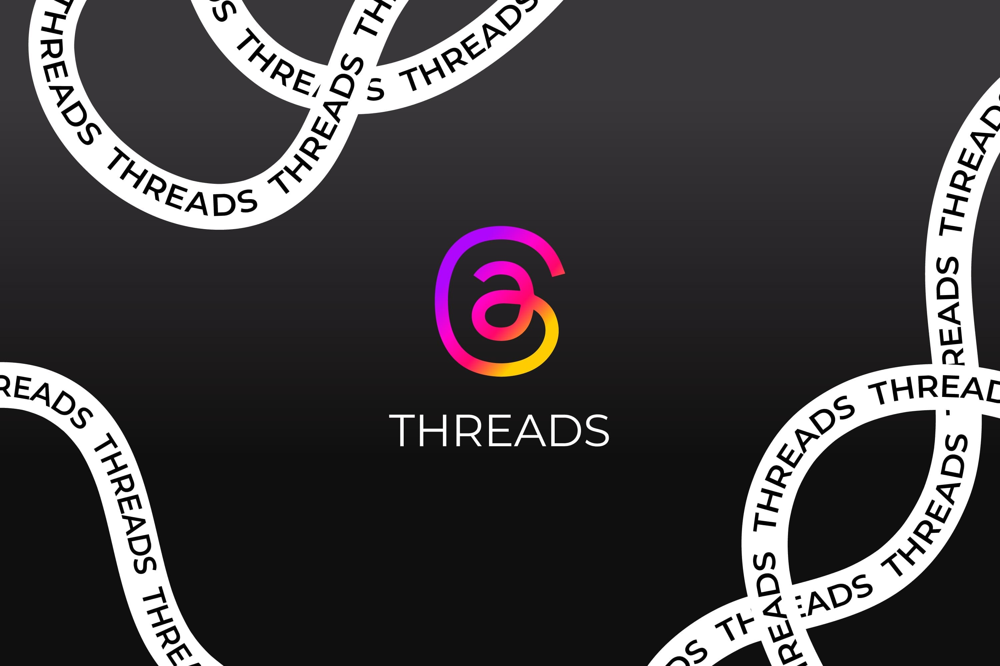

Threads: como usar para divulgar seu evento

Introdução:
Às vezes surge uma nova rede social na Internet, deixando os empreendedores pensando que precisam criar outra história e postar mais informações. Agora a nova rede é a Threads, plataforma conectada ao Instagram.
Mas será que esta ferramenta é realmente boa para desenvolvedores de projetos? Neste post, veremos a natureza do trabalho, quais são suas diferenças e benefícios, e como utilizá-lo no trabalho para aumentar a visibilidade da produção. Confira abaixo!.
O que é Threads?
Threads é um aplicativo criado pela equipe Meta para compartilhar textos, links, fotos, desenhos animados e vídeos. Por ser um microblog, você pode escrever artigos de até 500 caracteres, e é considerado um concorrente direto do Twitter, chamado X.
Esta ferramenta está vinculada ao Instagram. Dessa forma, os usuários podem rastrear e acompanhar as contas que vincularam na rede fotográfica. Essa conexão significa que o aparelho será muito popular logo após seu lançamento, em julho de 2023.
Para utilizar a plataforma, é necessário ter uma conta no Instagram e baixar o aplicativo Threads no seu celular. Você pode inserir seus dados de informações do zero ou importar informações do Insta.
Depois de criar uma conta, você pode começar a criar postagens, promover eventos, criar promoções e compartilhar ideias com seus seguidores para aumentar o engajamento com sua organização.
Vantagens de usar a rede
Essa é uma nova rede social e quando ferramentas como essa surgem é comum os profissionais se perguntarem se vale a pena aderir a mais uma nova plataforma.
Neste caso a resposta é sim! Threads é uma ótima rede para produtores de eventos que buscam promover e vender seu trabalho, tendo reunido milhões de usuários poucas horas após seu lançamento.
A seguir, você confere as principais vantagens de criar um perfil e começar a utilizá-lo.
Integração com Instagram
Um aplicativo integrado ao Instagram. Dessa forma, ao criar uma conta, você será atribuído aos usuários que te seguem na rede de fotos e vídeos. Isso o ajudará a conseguir muitos seguidores desde o início.
Além disso, a ferramenta permite que você reposte o conteúdo de uma rede em outra, fortalecendo, assim, sua presença nas mídias sociais.
Aumento da visibilidade
"Quem não é visto, não é lembrado." Você provavelmente já ouviu isso, certo? Nunca poderá ser mais real no mundo digital.
Estar onde seu público está é a maneira mais eficaz de garantir que eles não se esqueçam da sua marca. No entanto, é importante lembrar que diferentes tipos de público podem utilizar diferentes tipos de redes. Então participar de tudo isso é uma forma de aumentar sua visibilidade e alcançar mais pessoas.
Relação mais próxima com seus clientes
Por fim, os tópicos podem atingir seu público-alvo criando postagens que irão espalhar e atrapalhar o conteúdo da indústria usado em outras redes.
Essa ferramenta permite ao produtor de eventos que ele seja mais descontraído e leve, despertando a identificação do público e garantindo maior interação e engajamento.
Threads: como usar antes, durante e depois do evento
Você já sabe que ingressar nesta nova rede será benéfico. Mas como você pode usá-lo para promover seu evento? Confira algumas dicas abaixo.
Antes do evento
Antes do dia, você pode usar Threads para divulgar diretamente seu trabalho, anunciar mudanças importantes, iniciar promoções e sorteios. Para expandir seu alcance e gerar interesse público, conecte-se com seu público e envolva-se ativamente.
Durante o evento
Esta é uma rede de alta velocidade, então você pode usá-la para postar notas, atualizações ao vivo, cobertura de eventos e segmentos de eventos. Você também é incentivado a repassar tópicos com experiências e comentários dos participantes.
Pós-evento
Você pode usar sua rede para aumentar o impacto do seu evento. Você já viu alguém falar sobre isso? Oportunidades para interagir e compartilhar piadas, convidar usuários para outros eventos, compartilhar comentários e muito mais. A ideia é manter a rede ativa e visível mesmo entre os lançamentos.
As postagens no tópico não são apenas uma “marca social” e um argumento de venda para a nova edição, mas também ajudam a avaliar a percepção do público sobre o evento.
Promover um evento é uma das tarefas mais importantes de um produtor. Threads também podem ser usados para apoiar esta etapa, para melhorar a visibilidade e a interação.